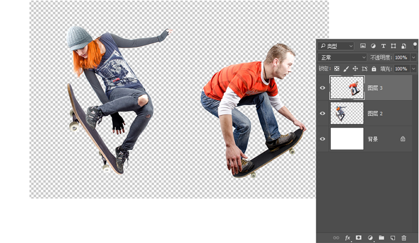
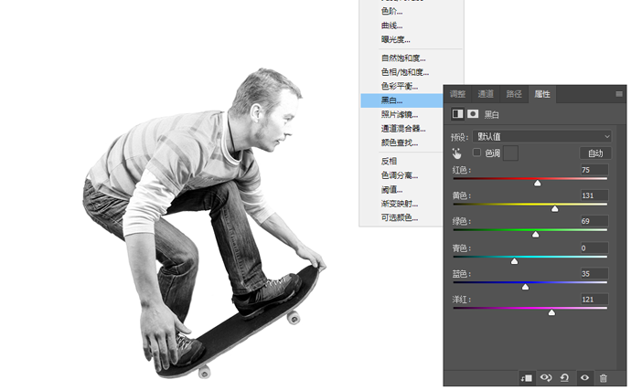
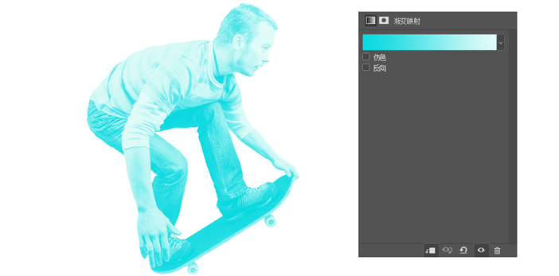
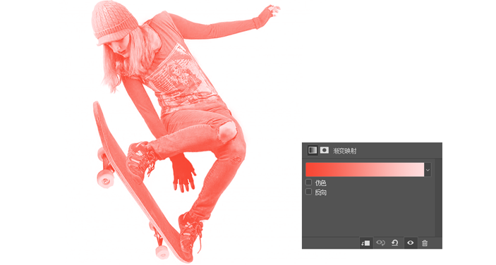
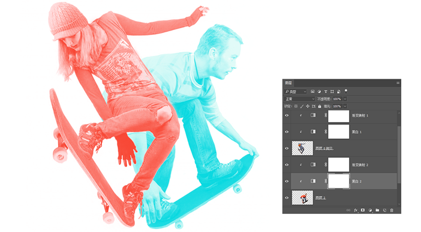
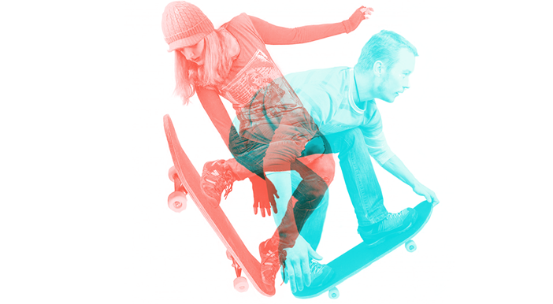
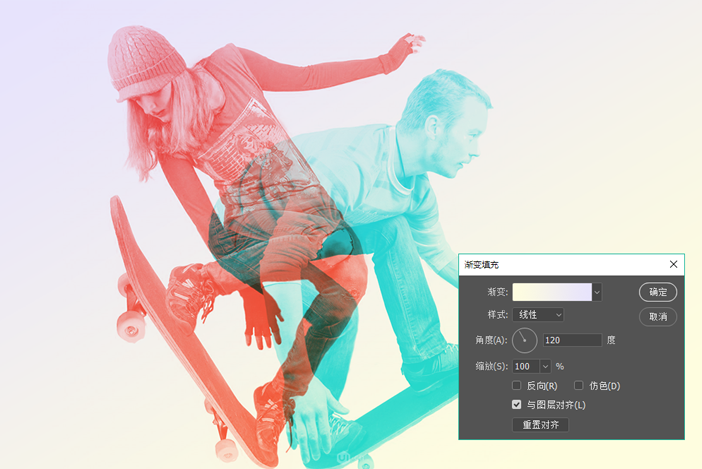
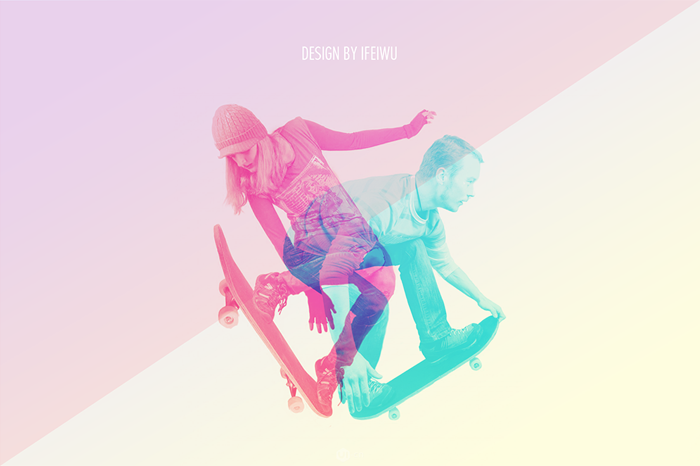

万物之间总有那么一丝一毫的形象之间的联系，这一联系就会让两个毫不相关的形象之间形成某种内在的逻辑
首先，是选择两个不同的人像重影，在此我们运用滑板运动的人物造型，体现某种运动中的姿态韵律。你也可以选用其他的动态人物比如舞蹈、跳水、溜冰等等。之所以选择动态造型，主要是为了取其姿态的灵动感，将其有机结合。
在PS中将选择好的人像做抠图的准备。每个人物作为一个新的图层加入到新文档中
关闭其中一个人物的可见，先为第一个人物调色。这里所谓的调色并非是要让画面更“美”，而是要让其整体偏色，达到失真的效果，重点在“色”，因此，这里就要谨慎选择色调。比如我这里所采用的红蓝组合，那么这个人物就安排为蓝色调。
去色后，再为照片增加【渐变映射】的调整图层，渐变映射的原理简单来说就是将渐变色调的韵律“映射”到照片中，这时在安排渐变色时要注意的是，左边的色调对应照片中的“阴影”部分，反之，右边对应的是“高光”部分，因此渐变色在明暗上应该有区间，使得最终效果可以辨别出基本的细节。
关闭已经做好的人像图层以及跟随它的两个调整图层，打开另一个人像的图层可见按钮。也按照相同的方法为其调色，在渐变映射时选择的是红色的渐变。
打开所有关闭可见的图层，使得跟随每个人物的调整图层都能作为其剪切蒙版而存在，否则它们将相互影响。
总之，你的调色目的是要让这两个人物有重叠，且重叠部分能呈现出某种趣味与和谐。
然后在最底部增加一个渐变填充图层，渐变的色彩如下。色彩保持非常微妙的范围。
为了增加动感，在最上方用钢笔工具绘制一个红色直角三角形，色块的图层混合模式设置为“深色”，透明度降至8%。整个画面好像被三角的一条边所分割，斜向的线条增加了动感造型，配合整个人物的动态情景。
完成效果：
原创作品·UI移动设备/APP界面
感觉还是很大气，logo外行，听喜欢的，而且感觉很有内涵
厉害了我的哥！太棒啦！今晚就试着做做看
叠加就没色彩了，是白色？只有正常和正片叠底才有紫色 ?